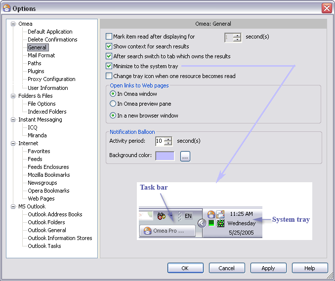
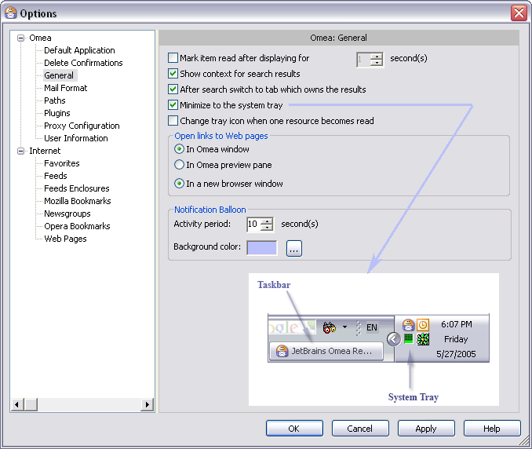

Configuring Options
Omea ReaderOmea Pro provides an array of configuration options that enable you to customize how some things work. Some of these are related to indexing of resources, while others pertain to how things appear or behave in Omea Reader Omea Pro.
The default settings for most non-indexing options should enable most people to get started with Omea ReaderOmea Pro. The information in this topic simply provides an overview of the types of options available to you as you become better acquainted with Omea Reader Omea Pro. There are also links to more detailed information found in the Reference.
How to Access the Options Dialog
The Options dialog provides access to all of Omea Reader?s Omea?s configuration options.
To open the Options dialog:
- On the main menu choose Tools | Options
The Options dialog contains a panel on the left that displays the main categories of configuration options, and related option groups within the main ones. The left-hand panel displays a category description when a main option category is selected, and controls for setting options when a particular group is selected.
The Options dialog (Omea General group shown)
The Options dialog (Omea General group shown)
Available Option Categories and Groups
The Options dialog contains the following list of Option categories and groups. The links below take you to the Reference topic for each group. You can also access these topics from the Options dialog by clicking a group and pressing F1.